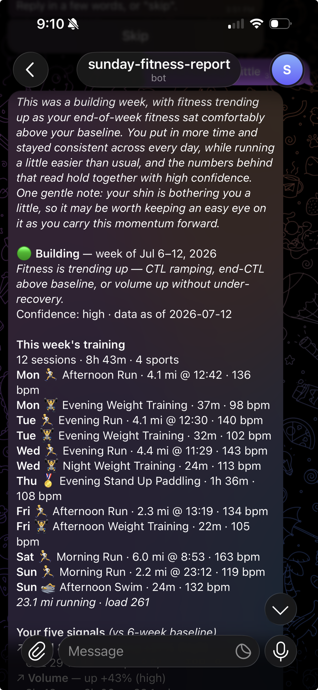
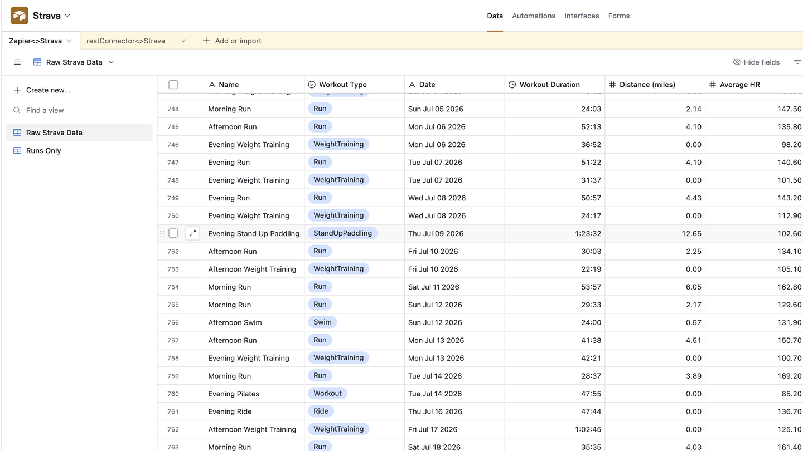
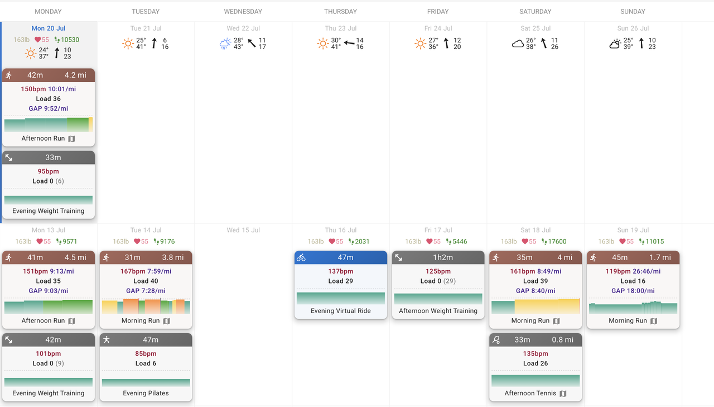
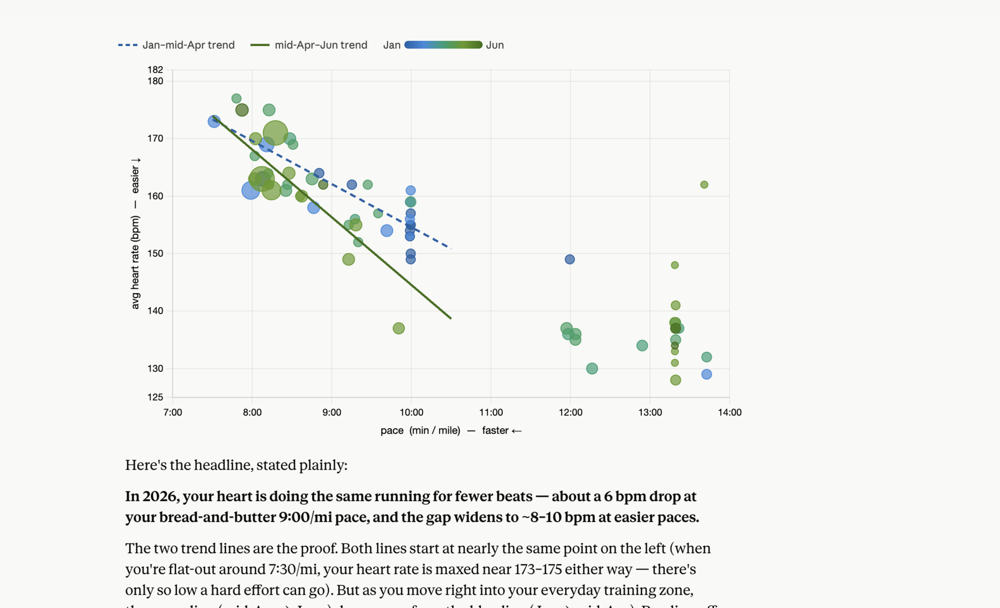
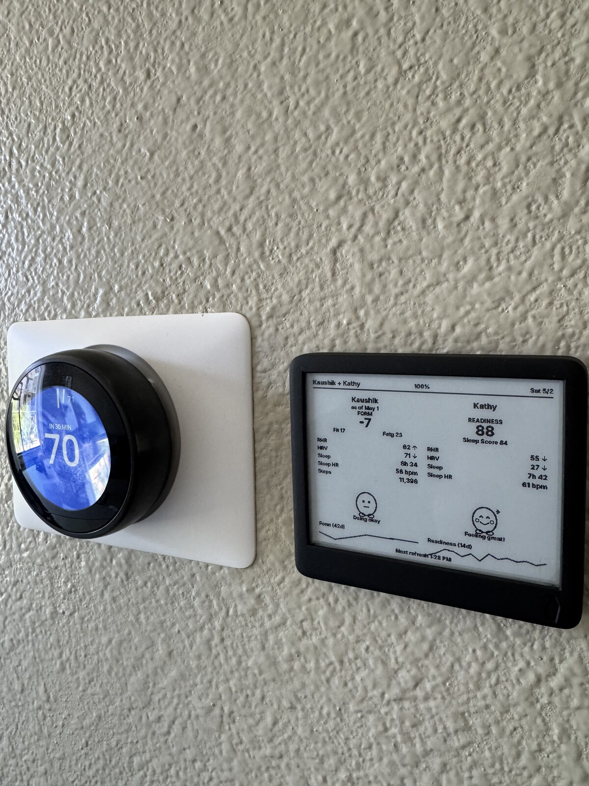
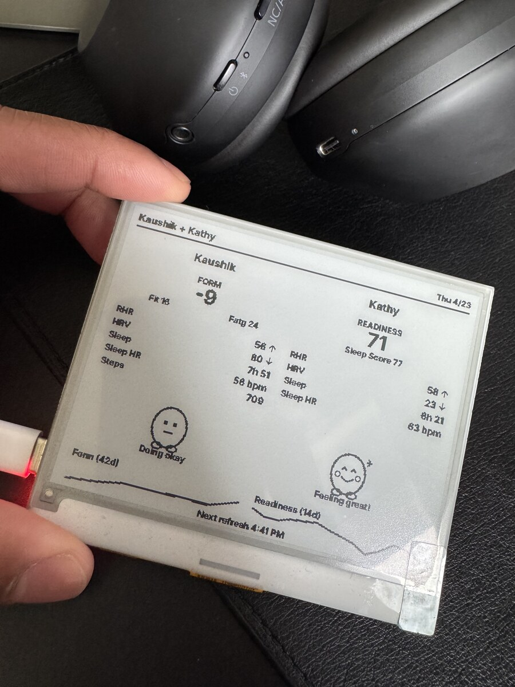
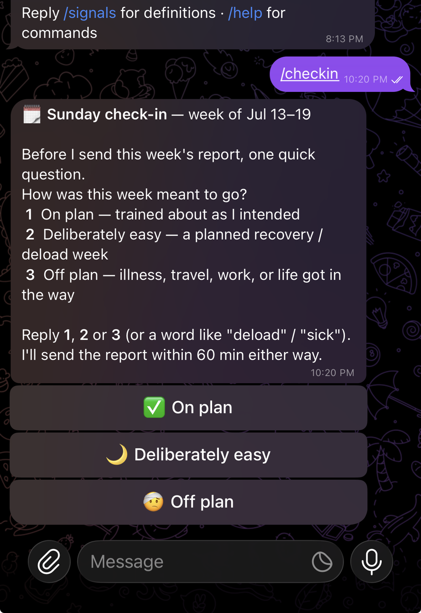

My source
COROS watch
Excellent hardware. No easy public API for the history I wanted to explore.
Fitness data journey
01 / 12
From closed APIs to a personal fitness agent
COROS → agent
01 / Outcome
Now my fitness data explains itself every Sunday.
One data foundation. Many interfaces. Increasingly useful feedback loops.

02 / Access before insight
A great wearable is not automatically a useful data platform.
My source
Excellent hardware. No easy public API for the history I wanted to explore.
The obvious bridge
I did not want this personal project tied to another paid or managed API dependency.
The useful reframing
“Stop integrating every device. Find one trustworthy place for the history.”
The breakthrough was not a perfect connector. It was an abstraction layer I could keep reusing.
03 / Automation
Airtable proved the ritual—and exposed the next gap.

Activities arrived consistently without manual bookkeeping.
A calm Sunday reflection was worth keeping.
Could one platform combine my COROS training, my partner’s Oura recovery, and new questions?
04 / Data foundation
Intervals.icu synced COROS training and Oura wellness, exposed an open API, and kept the core genuinely free.

Why Intervals.icu
The platform I was looking forOne data foundation. Many interfaces. Increasingly useful feedback loops.
05 / Exploratory analysis
I exported Intervals.icu data, uploaded it to regular Claude chat, and followed the questions wherever they went.
“Is my heart doing the same running for fewer beats?”
Claude turned exported rows into a chart and a plain-English interpretation.
Export, upload, prompt—and remember to repeat it.

Discovery was solved. Repeatability was not.
06 / Paperdink
Paperdink puts my data beside my partner’s on one 4.2-inch e-ink display.

Installed at home
Prototype close-upKaushik
PERSONAL FEEDactivities + wellnessKathy
PERSONAL FEEDactivities + wellness07 / Purpose-built agents
The SDK made the optional AI step easy. The useful product loop was everything around it.
General-purpose platform
Useful when the job really needs a broad, programmable assistant.
This job
Permissions, state, failure modes, and maintenance stay legible.
The SDK shelf is already here
“Connecting AI to a data warehouse is cheap. Deciding what it may do is the design.”
Custom Go orchestration + one SQLite file + Telegram. The Copilot SDK is one fresh, tool-disabled, optional narration call.
No dedicated hosted backend: it runs on hardware I already own and uses existing service accounts.
08 / Fitness data, translated
The report compares me with my own recent normal—usually six trailing weeks—not with another athlete.
Is my longer-term fitness trend rising, holding, or easing?
How much training did I actually do?
How hard and concentrated was the work?
How often did I show up?
Do readiness signals support the training story?
How it stays honest
Medians soften one strange week. Missing inputs lower confidence and add a caveat—they never become a guess.
09 / Architecture + trust
AI writes above the report. It never calculates a metric, changes a verdict, or controls the schedule.
Optional sidecar
GitHub Copilot SDK finished facts only · tools off · 1–2 sentence lede ↓10 / The product surface
Buttons, commands, and saved messages remove the need to build a separate app UI.

What the finished report explains
Jun 29–Jul 5 Building
Jun 22–28 Recovering by design
Jun 15–21 Holding
/report [date]/checkin [date]/history/last/signals/help/checkin a completed week→point to verdict + sessions + baseline→/history
11 / Build with confidence
Helpful commands turn an agent from a magic demo into a system you can understand, test, and extend.
make dump-week DAY=...see raw weekly aggregatesmake facts DAY=...inspect five signals + verdict JSONmake report-rawpreview deterministic Telegram outputmake reportcompare optional AI narrationmake verifyformat, vet, test, build, glossarymake preview-p1open the exact SVG in Chrome/previewsee both pages + simulated 1-bit modemake curl-bmpverify 400 × 300 bitmap encodingmake typecheckcatch Worker contract mistakesmake flashship only after the browser path is rightDo not debug the whole agent at once. Make the source, facts, render, and delivery independently visible.
12 / Next stop
Once the data has a home, one more signal or command is an extension—not a new product.